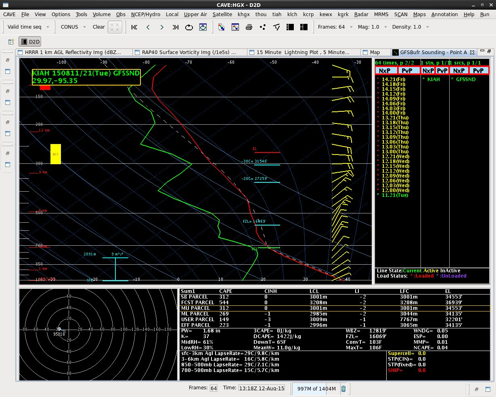
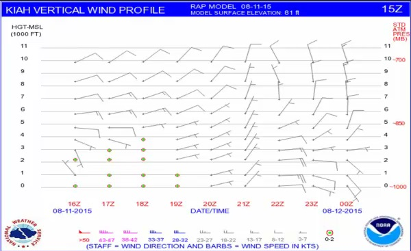
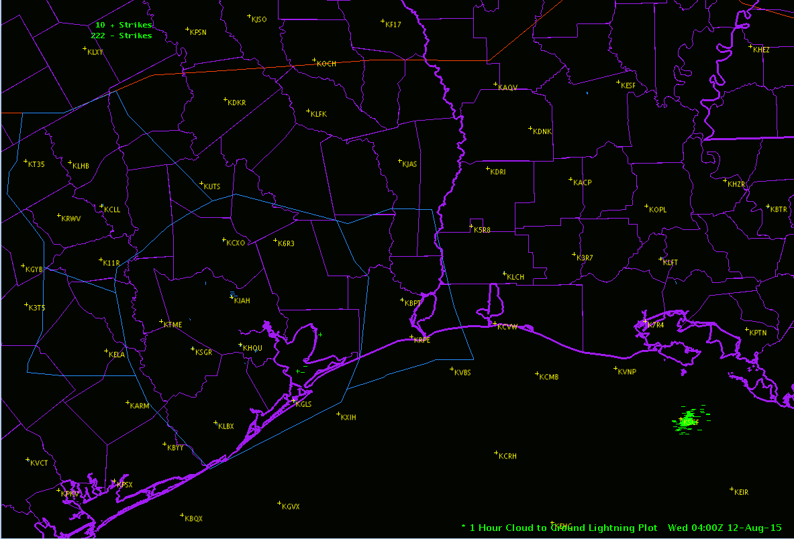
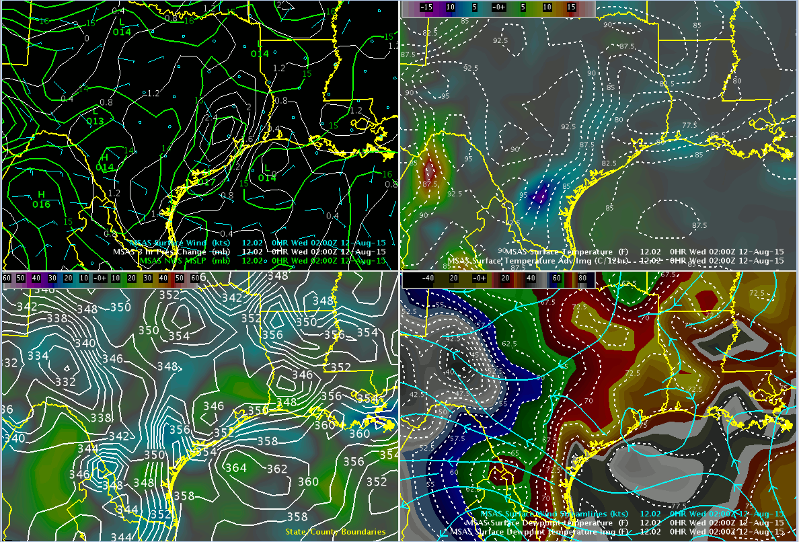

ZHU Training Page archive · Record Heat/Severe Weather - August 11, 2015 *** · Source: http://www.weather.gov/media/zhu/ZHU_Training_Page/Event_Writeups/August_11_2015_Case_Study.ppsx · Captured 2026-08-19 06:00 UTC · Rendered from PowerPoint (17 slides); layout is approximate — original file: source/August_11_2015_Case_Study.ppsx
Slide 1
Review of August 11, 2015 Severe Weather Event
Eric Zappe National Weather Service Houston Center Weather Service Unit
Slide 2

GFS BUFR Sounding – KIAH (Aug 11 21Z)
Large pockets of dry air will favor strong downburst type winds (including Inverted-V sounding in lowest 10,000 ft) NOTE: Surface temp of 105
kiah Reflectivity Loop (Aug 11 20:27Z – Aug 12 02:28Z)
Slide 5

KIAH Vertical Wind Profile (Aug 11 15Z Issuance)
Notice abrupt wind change (veering wind direction and increasing speed) between 21Z and 22Z. These winds will spread moisture inland as well as increase strength of any downburst winds
Slide 6

One Hour Lightning Plot Loop (Aug 11 19Z - Aug 12 02Z)
Slide 7

MSAS Analysis Loop (Aug 11 15Z – Aug 12 02Z)
Temperature
Dewpoint Temperature
Thermal trough
Moisture axis
NOTE: Record high of 106 Recorded at KIAH
Theta-e ridge and strong surface moisture flux convergence
Equivalent Potential Temperature / Moisture Flux Convergence (in blue/violet)